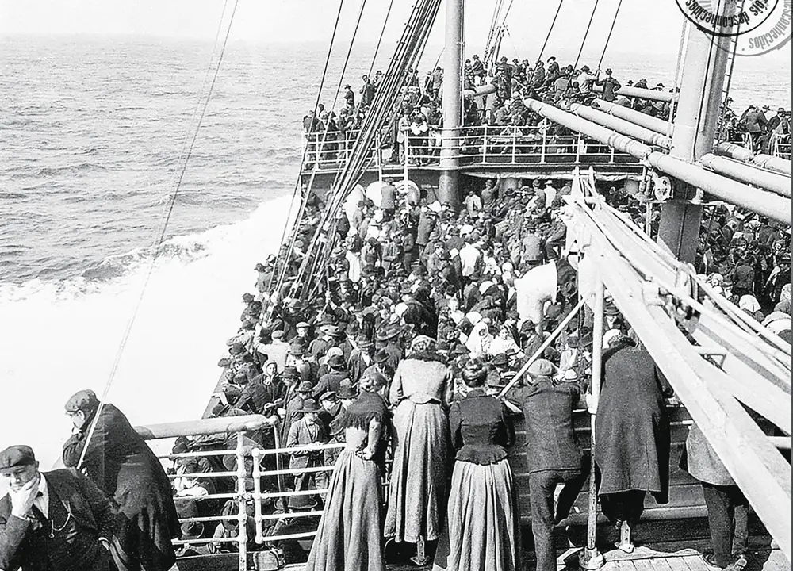

Independência
O processo começou em 25 de maio de 1810 (Revolução de Maio), em Buenos Aires, quando a elite crioula aproveitou a invasão da Espanha por Napoleão para depor o vice-rei espanhol e formar seu primeiro governo autônomo (a Primeira Junta). Embora o rompimento com a Coroa Espanhola já estivesse em curso, a independência oficial foi declarada em 9 de julho de 1816, durante o Congresso de Tucumán. A consolidação militar veio nos anos seguintes graças aos exércitos liderados por figuras como José de San Martín, que derrotou os realistas e libertou não só a Argentina, mas também o Chile e o Peru.
Buenos Aires
A história de Buenos Aires passou por duas fundações (1536 e 1580), saindo de um pequeno povoado isolado para se tornar a capital do Vice-Reino em 1776 e o berço da independência em 1810. No final do século XIX e início do século XX, a cidade explodiu em crescimento com a chegada massiva de imigrantes europeus, que moldaram sua cultura e deram origem ao tango. Após ser palco de grandes reviravoltas políticas (como o peronismo) e da ditadura militar, consolidou-se hoje como uma metrópole vibrante e o coração cultural da Argentina.

Imigração
A migração na Argentina foi marcada por duas grandes ondas: a imigração em massa de europeus (principalmente italianos e espanhóis) entre 1870 e 1930, que moldou a identidade cultural do país; e a chegada histórica de vizinhos sul-americanos (como paraguaios, bolivianos e chilenos), além de novos fluxos recentes, consolidando a Argentina como um país de braços abertos a diferentes povos.